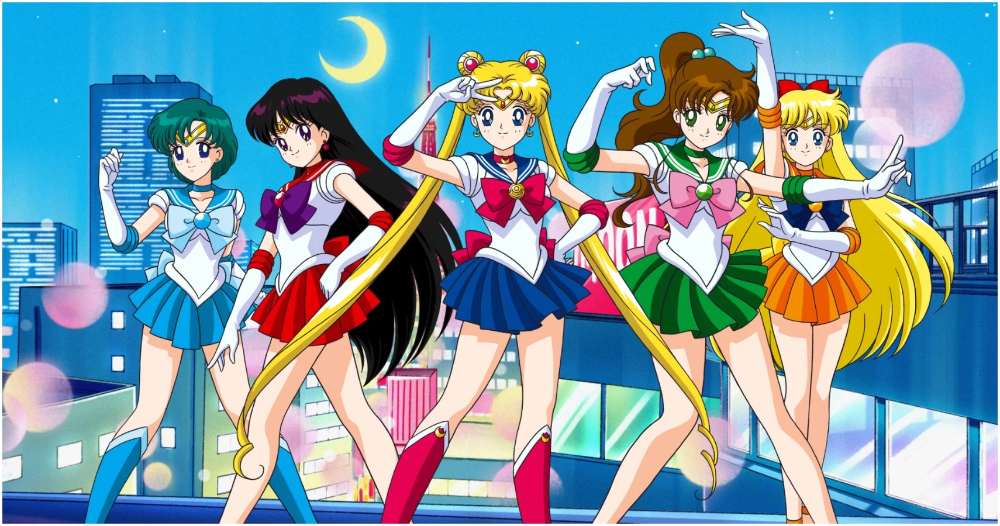

About Sailor Moon
Usagi Tsukino, better known as Sailor Moon, is a fictional superheroine who is the main protagonist and title character of the Sailor Moon manga series written by Naoko Takeuchi.
Sailor Moon and the Sailor Senshi
Sailor Moon's Characteristics
- Sailor Moon is the champion of love and justice
- She believes in the power of frienship
- She loves to eat ice cream and sweets
Sailor Moon's Friends
Usagi's best friends are the Sailor Senshi. They are Sailor Mercury (Ami Mizuno), Sailor Mars (Rei Hino), Sailor Jupitor (Makoto Kino) and Sailor Venus (Minako Aino). Click on the links below to read more about them